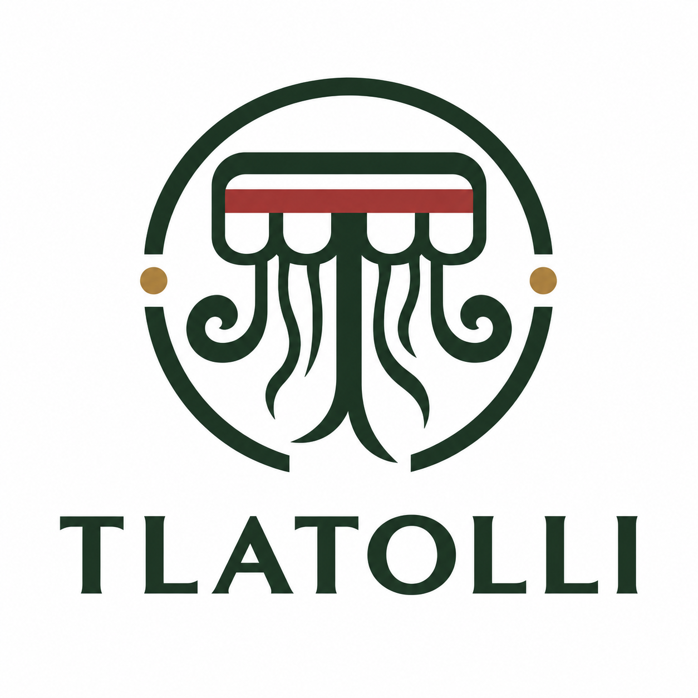

Atrae más
clientes
Estrategias digitales para aumentar el alcance y generar oportunidades comerciales.
Conocer más ↗
Estrategia digital con raíz mexicana
Conectamos marketing, tecnología y datos para convertir cada punto de contacto en una oportunidad de crecimiento.
Lo que hacemos posible
Tu negocio no necesita más ruido. Necesita claridad para saber dónde crecer y un equipo capaz de hacerlo realidad.
Estrategias digitales para aumentar el alcance y generar oportunidades comerciales.
Conocer más ↗Analizamos el comportamiento de tus clientes para optimizar campañas y productos.
Conocer más ↗Diseñamos experiencias y sistemas de recompensas que hacen que vuelvan.
Conocer más ↗Integramos ventas, clientes, productos y campañas en un mismo ecosistema.
Conocer más ↗Una agencia, muchas posibilidades
Creemos que la tecnología tiene más valor cuando ayuda a las personas a hacer mejor su trabajo. Por eso unimos creatividad, estrategia y desarrollo para resolver lo que de verdad importa.
Servicios
Desde la primera idea hasta el dato que comprueba su impacto. Un solo equipo, una visión completa.
Campañas, contenido y performance que acercan tu marca a las personas correctas.
Experiencias digitales que se ven bien, funcionan mejor y convierten visitas en oportunidades.
Conectamos procesos para que tu equipo ahorre tiempo y pueda enfocarse en lo que sigue.
Convertimos información dispersa en decisiones claras y acciones comerciales concretas.
Diseñamos recompensas, seguimiento y experiencias que construyen relaciones duraderas.
El ecosistema Tlatolli
Visualiza, organiza y activa tu operación digital desde una misma lógica.
Calendarios, campañas y publicaciones organizadas para cada canal.
Ver solución ↗Una idea, muchas formas de conectar con tu audiencia.
Ver solución ↗Una experiencia de fidelización para convertir compras en relaciones.
Ver solución ↗Herramientas que se adaptan a la manera en que tu negocio funciona.
Ver solución ↗Proyectos seleccionados
Una identidad digital que habla con claridad.
Datos claros para decisiones ágiles.
La comunidad como punto de partida.
Casos de éxito
Visita cada experiencia y conoce el trabajo publicado por Tlatolli en GitHub Pages.
Experiencia digital para una marca con movimiento, claridad y presencia propia.
Una presencia digital que conecta identidad, cultura y una navegación cercana.
Un espacio digital para comunicar comunidad, actividades y pertenencia.
Portafolio vivo
Estos casos están publicados y disponibles para explorarse. Si tienes un reto parecido, podemos diseñar la siguiente experiencia contigo.
Cuéntanos tu proyecto ↗experiencias digitales disponibles para visitar
Diagnóstico digital
Responde tres preguntas y recibe una primera lectura de lo que tu negocio puede activar.
Contacto
Una buena conversación puede ser el primer paso de algo grande. Cuéntanos sobre tu negocio, tu reto y hacia dónde quieres llevarlo.